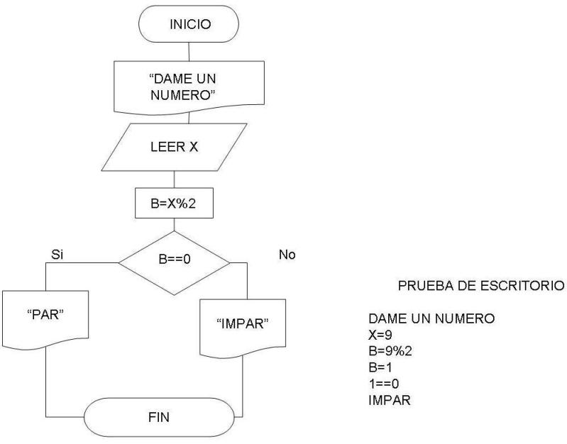

Fundamentos de programación en JavaScript parte 2
Regresar al inicio
Algoritmos y Diagramas de Flujo
Eventos
Manejador de eventos como atributo HTML
Manejadores de evento semánticos
Manejadores de eventos múltiples
¿Cómo determinamos sin un número es par o impar?
Dame un número
